013 天天生鲜项目简略上
1.项目架构¶
2. 数据库表结构¶
3.项目框架搭建¶
1.创建项目
2.创建多个应用
- 使用idea打开项目,然后将建立的多个应用放到一个包中
- 注册应用 这样在后面路由的配置的时候也是需要进行添加包名的 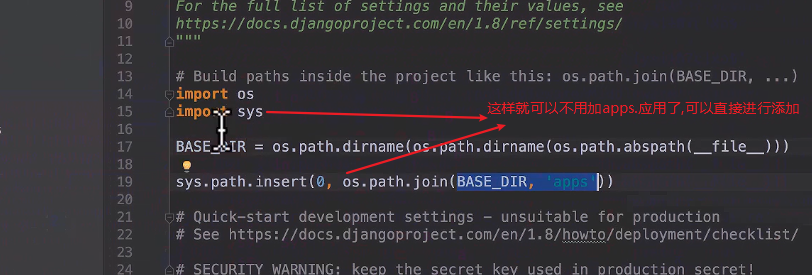
import os import sys BASE_DIR = os.path.dirname(os.path.dirname(os.path.abspath(__file__))) sys.path.insert(0,os.path.join(BASE_DIR, 'apps') )
- 创建模板文件
- 配置模板文件的路径
- 配置数据库 创建数据库 settings 配置 __init__文件导入mysql数据库
import pymysql pymysql.install_as_MySQLdb()
数据库的迁移
- 语言时区的更改 9.静态文件的配置 首先创建一个static文件在 静态文件目录的配置
- 主路由的配置
 添加namespace 主要是在进行动态的解析时,防止频繁变更名字.
添加namespace 主要是在进行动态的解析时,防止频繁变更名字. - 子路由的复制与配置(每一个应用都要进行赋值)
- basemodel的创建,让所有的应用的模型类继承这个basemodel
创建一个base_model文件
from django.db import models class BaseModel(models.Model): '''模型抽象类''' create_time= models.DateTimeField(auto_now_add = True,verbose_name='创建时间') update_time = models.DateTimeField(auto_now = True, verbose_name = '更新时间') is_delete = models.BooleanField(default = False, verbose_name = '删除标记') class Meta: #说明这是个抽象模型类 abstract = True
- 其它models模型类的创建 user 中的models .... 14 由于使用了富文本编辑器,所以进行富文本编辑器的注册
TINYMCE_DEFAULT_CONFIG = { 'theme': 'advanced', 'width': 600, 'height': 400, }
3）在test6/urls.py中配置编辑器url。
urlpatterns = [ ... url(r'^tinymce/', include('tinymce.urls')), ]
15 . 指定自己的认证系统
注意： AUTH_USER_MODEL配置参数要在第一次迁移数据库之前配置，否则可能django的认证系统工作不正常
- 进行数据库文件的迁移
17 静态页面
18 注册页面的设计(register)
在user的view中写一个函数进行显示
路由的配置
网页的显示
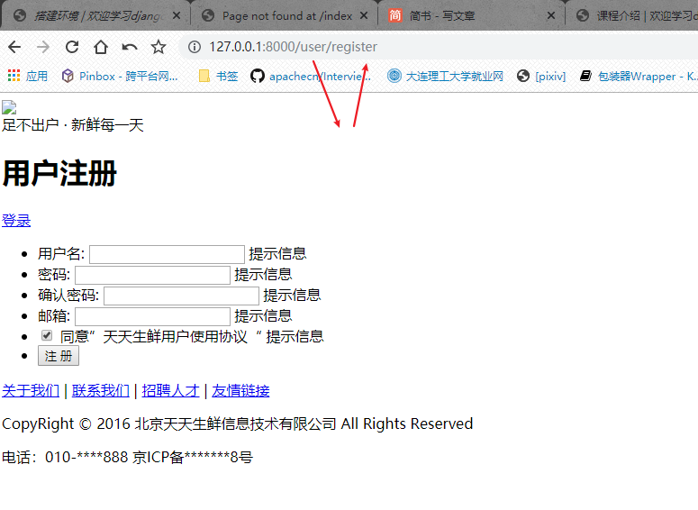
没有正常的图片
表单提交的设置
 提交表单以后 的处理
view中register_handle函数编写
提交表单以后 的处理
view中register_handle函数编写
路由的配置(以后不再加这一项的详细) 首页的设置 注册完成后的页面跳转 数据库的变化 19 一般视图函数有时候不能满足我们的要求,因此呢需要进行类视图的定义 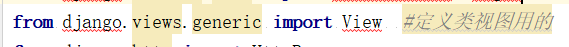 20 激活邮件 使用 itsdangerous 加密用户的身份信息
过期的加密解密会报异常
激活邮件发送,接受,然后进行激活(专门的激活类视图),激活以后跳转到登录页面
注册总结: 接收数据 数据校验 发送激活邮件 跳转到首页 激活 跳转到登录页面 21 邮件发送是阻塞类型,在发送到smtp服务器的时间会长时间阻塞影响用户体验,因此呢使用celery代替此函数发送邮件(看课件celery)
22 celery使用¶
在项目目录中单独新建一个文件存放耗时较长的任务 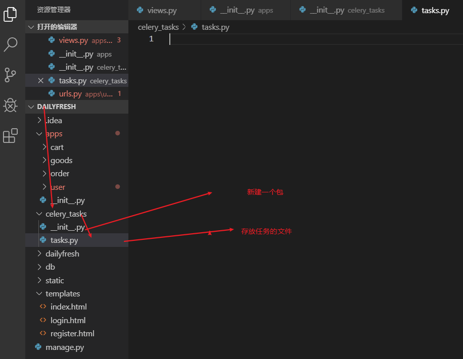
将项目复制到另一个文件夹中
然后取消注释
这里使用一些安装包注意版本
django是1.8.2
pip install celery==3.1.18
pip install redis==2.10.6
关于redis的使用看课件但是注意如何启动redis的服务端(windows下)
redis-server.exe redis.windows.conf(到安装redis的文件目录下使用cmd)
在新复制的项目中进入到dailyfresh这个文件夹,启动cmd窗口
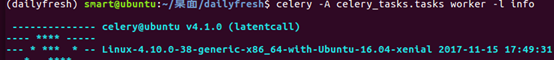
celery -A celery_tasks.tasks worker -l info进行启动就可以了(-l info 是设置显示的信息)
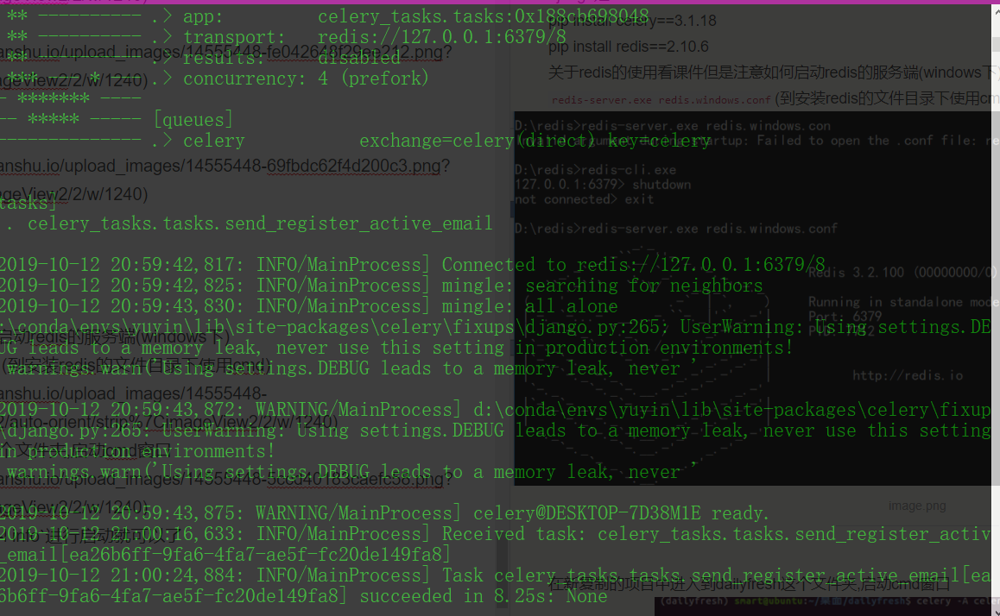
需要注意的是可以不用复制一份新的项目到别的文件夹中,复制到别的文件夹是因为可能是需要两台电脑的时候得操作,不需要复制的时候,也需要注意的是必须把注释的那部分取消,不然也是找不到配置的,毕竟是两个不同的cmd窗口启动,然后还是同样的操作步骤即可.
如果不在同一个电脑中,必须能够进行通信
23 登录函数
24 记录session缓存 https://django-redis-chs.readthedocs.io/zh_CN/latest/¶
安装使用pip install django-redis==4.4.2 否则会跟Django版本不匹配
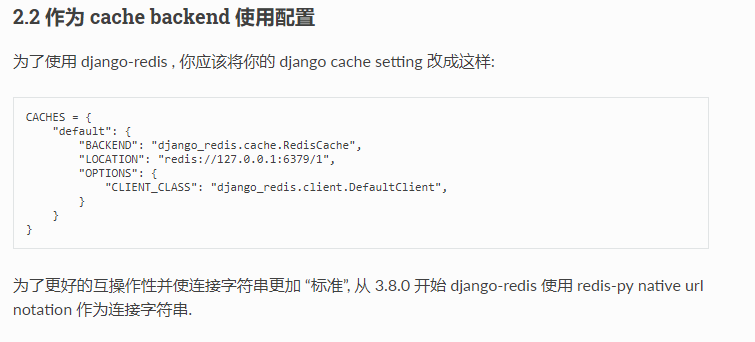
25 cookie的设置
26 用户中心-父模板页抽象¶
页面相同的抽象成一个父模板,不同的地方预留一个block块,不能不预留,因此不预留就没法在别的地方写 继承的页面在预留的块中书写就ok了
27 用户中心页面显示
继承的是base_user_center.html 父模板
没有登录进行登录的地址返回
28 from django.contrib.auth.decorators import login_required 包裹url地址看起来太复杂怎么办? 继承这个类会在创建实例对象的时候返回的是包装好的类 但是需要注意的是继承类的顺序,要先调用LoginRequiredMixin的as_view()函数
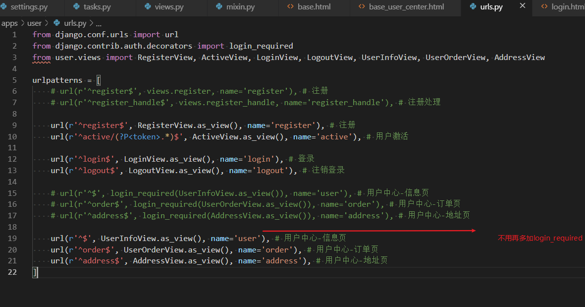 29 如何通过判断用户是否登录显示不同的界面 这里跟上面login_required 装饰其实功能类似(login_required(必须是内置的认证系统才能用) 不登录不能显示,如果这个页面没有加它那么这个29就可以起作用了,自己体会一下就好了,一个是不登录就不能显示,一个是根据登录与否显示不同的信息)
29 退出 30 用户中心地址页 使用get获取页面 post提交信息
这一个获取默认地址使用的是Django内置的查询方式
而上面使用的函数是我们自己定义的,在model类中定义的管理类 在调用的时候其实self就是Address.object
31 用户中心_个人信息页

32 历史记录存储格式设计
redis存储历史浏览记录分析 一个用户对应一个list(键(用户名):值(历史数据))
 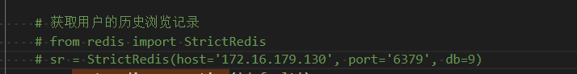
这是原来数据库redis与python交互的使用方法(查看redis课件)
但是Django_redis内置了获取redis数据的方法
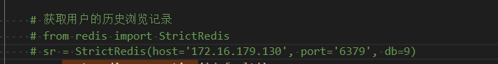
这是原来数据库redis与python交互的使用方法(查看redis课件)
但是Django_redis内置了获取redis数据的方法
FastDFS文件系统简介¶
32 FastDFS文件系统简介(具体的查看文档) 真的是按照教程以及文档自己搞废了时间勒¶
解决内容重复使用的是hash值,重复文件只是返回了地址 33 .启动FastDFS的方法，需要的操作：
1. 修改如下的配置文件 （在/etc/fdfs目录中）(课程给了个虚拟机,我是自己实体机搭建的)  `tracker_server=自己的ip地址:22122` 2. 启动`tracker、storage、nginx`服务：
fdfs_trackerd /etc/fdfs/tracker.conf start fdfs_storaged /etc/fdfs/storage.conf start sudo /usr/local/nginx/sbin/nginx
要加路径(上面的是对的,这个图片是没加路径时候的错误信息)
3. 执行如下命令测试是否成功
fdfs_upload_file /etc/fdfs/client.conf 要上传的图片文件
如果返回类似group1/M00/00/00/wKh8Kl2u066AZHnrABYlnmXXzNA082.jpg的文件id则说明文件上传成功
在浏览器中可以用 127.0.0.1:8888/返回的文件id
访问图片
详细的配置看上一篇文章就好了
34 项目中上传和使用图片的流程
海量存储，存储容量扩展方便。 文件内容重复。 结合nginx提高网站访问图片的效率。
35 Django二次开发对接FastDFS https://yiyibooks.cn/xx/django_182/ref/files/storage.html 默认的文件上传使用的类 我们使用fastdfs就不能使用默认的,需要自己进行定义存储系统 https://yiyibooks.cn/xx/django_182/howto/custom-file-storage.html
需要的配置文件
后面在测试的时候发现给的这个client.conf文件是有问题的,然后直接拷贝的etc中的client.conf 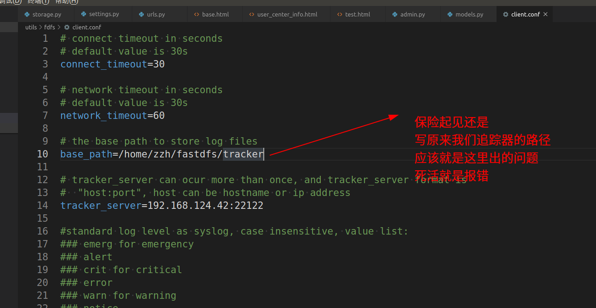
这里的配置太low 后面会进行配置
进行配置处理 指定自己的上传类,进行配置(指定我们自己的文件)
优化配置,动态处理 这里的FDFS_URL最好是写成自己的ip地址,因为你用127....别的电脑后面就访问不了了 nginx一般是127. 以及自己的ip都可以进行访问,但是后面会生成静态的index.html,使用127,别的电脑就访问不到了.
这里为什么需要返回url呢? 是这样的
但是我们最终需要访问的是下面这样的格式,因此需要加上我们的base_url才行
最后我们需要的img地址应该是上面这样的 可以看下后面需要生成静态index.html时的调用
进行图片上传的测试
创建管理员¶